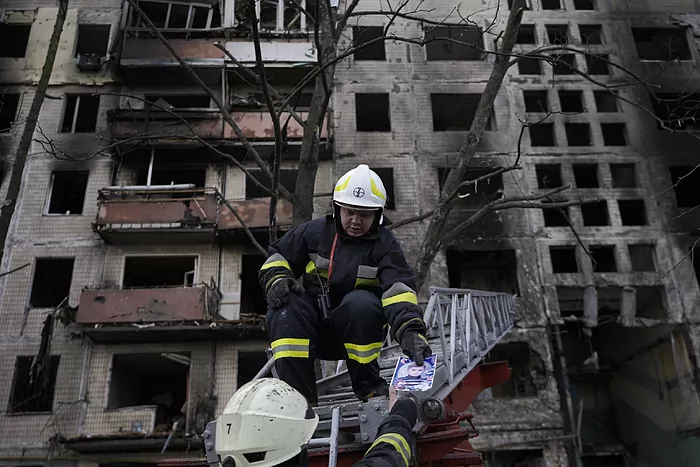

La Guerra en Ucrania
La guerra en Ucrania sigue sumando víctimas cuando se cumplen 20 días del inicio de la invasión por parte de Rusia. Los combates se han intensificado en las proximidades de la capital de Ucrania, "una ciudad en estado de sitio". Esta madrugada, Rusia ha atacado varias zonas residenciales en Kiev, con impactos de misiles en varios edificios de viviendas. Los servicios de emergencias de Ucrania han informado de al menos dos muertos. El lunes se reportaron varios muertos y heridos tras los bombardeos en diferentes barrios de la capital.

Rusia y Ucrania retoman este martes unas conversaciones que comenzaron ayer y en las que el propio presidente Volodimir Zelenski se produjeron ciertos avances. Además, los primeros ministros de República Checa, Polonia y Eslovenia viajan a Kiev como enviados de la UE para reunirse con el presidente de Ucrania.
Más de 2,8 millones de personas ya han huido de Ucrania, según cifras del lunes, día en que el Kremlin no ha descartado "tomar el control total" de las principales ciudades que ya están rodeadas, lo que implicaría una gran ofensiva militar.